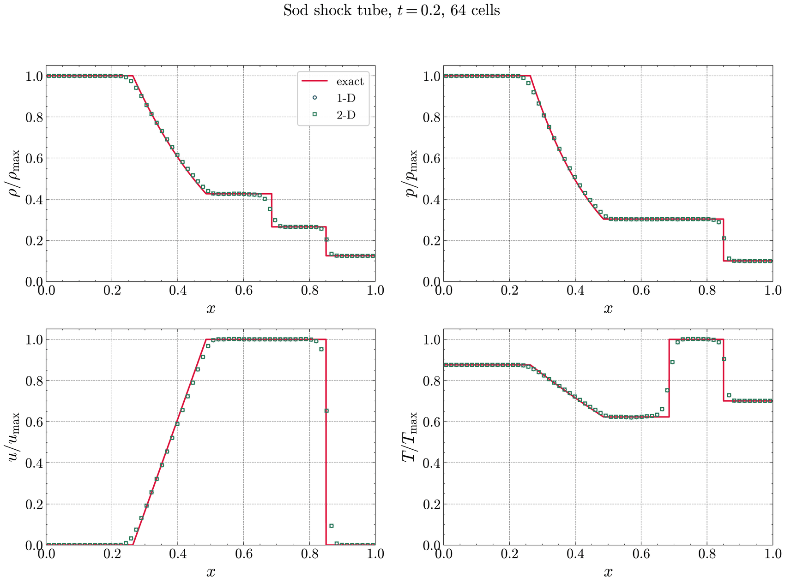
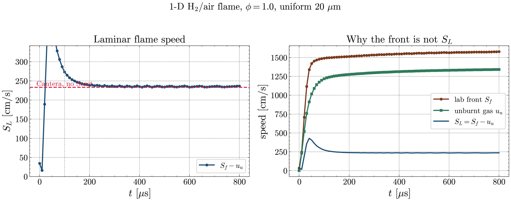
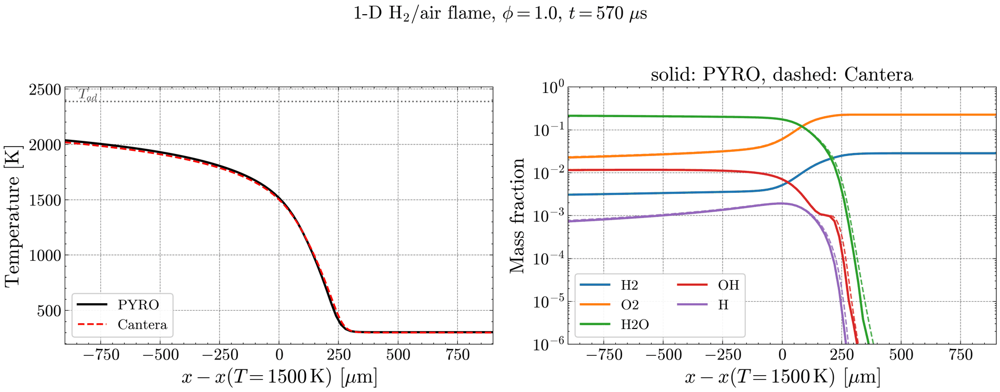
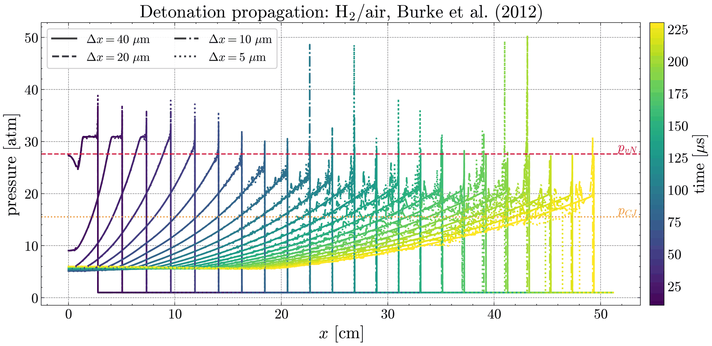
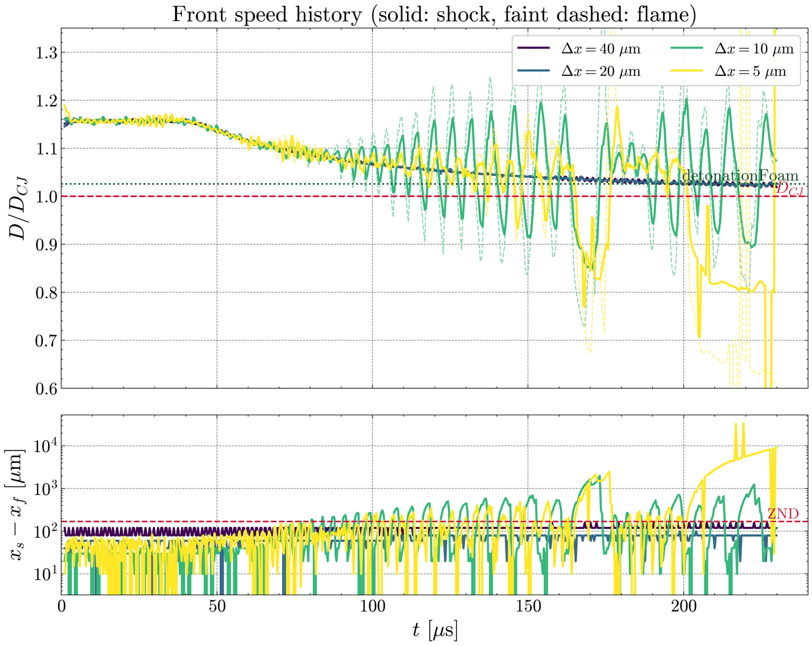

Results · Updated August 2026
Simulations
Verification cases and reactive-flow results, run in AMReX and OpenFOAM.
Verification cases
Problems with known solutions or well-established reference results. These come first: a solver that cannot reproduce them is not worth pointing at anything harder.

Fig. 1
1D Sod shock tube
The standard Riemann problem: a diaphragm separates two constant states, and removing it produces a rarefaction fan, a contact discontinuity and a shock. An exact solution exists, which makes this the first check on whether a compressible solver puts the waves in the right places with the right strengths.
Density, pressure, velocity and temperature at t = 0.2 on 64 cells, against the exact solution. Even on a grid this coarse the discontinuities are held within a couple of cells.
Most AMReX-based solvers cannot run a genuinely one-dimensional problem; they need a two-dimensional domain one cell deep standing in for it. PYRO runs in one dimension natively. Both are plotted here, and the native 1-D result and its 2-D equivalent lie on top of each other.
| Solver | PYRO (AMReX) |
|---|---|
| Riemann solver | HLLC-P |
| Reconstruction | TENO |
| Time integration | SSP-RK3 |
| Grid | 64 cells |
| Output time | t = 0.2 |
aUniform grid, no refinement.
bOne level of adaptive refinement.
cTwo levels, with the refinement boxes drawn. The boxes follow the shocks and the roll-up at the centre as the structures develop.
Fig. 2
2D Riemann problem
Four constant states arranged in quadrants. The discontinuities between them interact to produce shocks, rarefactions and contact lines all at once, which tests whether the scheme resolves multidimensional wave interactions without favouring a direction. Shown as numerical schlieren, run to t = 0.3, by which point the slip lines have rolled up into a jet at the centre — the part of the solution most sensitive to resolution.
All three runs reach the same finest cell size, so they ought to agree. What differs is how many cells are spent getting there: the uniform grid carries that resolution across the whole domain, while the refined runs concentrate it where the gradients are and leave the quiescent corners coarse.
| Solver | PYRO (AMReX) |
|---|---|
| Refinement | Uniform; 1 level; 2 levels, at matched finest cell size |
| Field shown | Numerical schlieren |
| Output time | t = 0.3 |
Fig. 3
Double Mach reflection
A strong shock meeting an inclined wall, producing an incident shock, a reflected shock, a Mach stem and a slip line, together with a wall jet. The case is demanding on both resolution and robustness, and is a useful test of adaptive refinement near the triple point.
Fig. 4
Supersonic flow over a cylinder and a wedge
A detached bow shock ahead of the cylinder and an attached oblique shock at the wedge. Standoff distance and shock angle are both known quantities, so the case checks shock capture on curved and inclined geometry.
Reactive flow
Combustion cases, ordered roughly by how much of the problem has to be resolved: from a one-dimensional laminar flame through to three-dimensional quenching in confined geometry.

aThe front is tracked in the laboratory frame and the flame speed recovered as SL = Sf − uu. The right-hand panel shows why the subtraction matters: expansion of the products drives the unburnt gas forward at around 1300 cm/s, so the front crosses the laboratory frame at roughly six times the flame speed. Past the initial transient the recovered value settles on the Cantera result.

bTemperature and major species through the flame at 570 µs, against a Cantera FreeFlame solution of the same mixture. Profiles are aligned on the 1500 K isotherm.
Fig. 5
1D laminar premixed flame
A freely propagating hydrogen–air flame at an equivalence ratio of 1.0, computed with PYRO on a uniform 20 µm grid. The domain is filled with premixed reactants at atmospheric pressure and lit by a small kernel at the adiabatic flame temperature, after which the flame propagates on its own.
This is the baseline check on the chemistry and transport: a code that cannot reproduce a laminar flame is not worth trusting on anything built above it. Both the recovered flame speed and the internal structure agree closely with Cantera.
| Solver | PYRO (AMReX) |
|---|---|
| Mixture | Hydrogen–air, φ = 1.0 |
| Grid | Uniform 20 µm |
| Initial conditions | 1 atm; ignition kernel at the adiabatic flame temperature |
| Reference | Cantera FreeFlame, Soret diffusion off |
aPressure along the tube as the detonation propagates, with one panel per grid spacing.

bProfiles at successive times overlaid and coloured by time, with the von Neumann and Chapman–Jouguet pressures marked. Line style distinguishes the four grid spacings.

cFront speed normalised by the CJ value (upper) and the separation between shock and flame (lower). The two coarser grids give an almost steady front close to the detonationFoam reference. Oscillations in the front speed grow as the grid is refined, and at 10 and 5 µm the flame intermittently separates from the shock by more than the ZND induction length. What form the instability takes is not settled by these runs.
Fig. 6
1D detonation
A one-dimensional detonation in hydrogen–air, computed with PYRO using the Burke et al. (2012) mechanism. The same case was run at four grid spacings to establish how much of the front behaviour belongs to the physics and how much to the grid.
| Solver | PYRO (AMReX) |
|---|---|
| Mixture | Hydrogen–air |
| Mechanism | Burke et al. (2012) |
| Grid spacing | 40, 20, 10 and 5 µm |
| Domain | 51 cm |
| References | detonationFoam; ZND and CJ values |
Fig. 7
2D cellular detonation
Transverse waves running along the front intersect the leading shock at triple points, and the tracks those points leave behind form the characteristic cell pattern. Cell size is the quantity of interest, and it is strongly sensitive to grid resolution.
Fig. 8
2D flame acceleration in submillimetre channels
Temperature field as a flame accelerates along a submillimetre channel and transitions to detonation, computed with PYRO. The case follows Houim, Ozgen and Oran (2016) and uses the chemical–diffusive model parameters given there.
The flame accelerates through its interaction with the boundary layer: the tip runs well ahead of the skirt, and the stretch that follows increases the flame surface area and the rate of energy release. Acting as a piston, the accelerating flame sends out compression waves that coalesce into a precursor shock, and viscous dissipation in the post-shock flow heats the boundary layer beyond what the shock alone delivers. The reactants near the wall eventually autoignite ahead of the flame skirt, and the spontaneous wave that forms propagates along the reactivity gradient left through the boundary layer and initiates the detonation.
| Solver | PYRO (AMReX) |
|---|---|
| Model | Chemical–diffusive model |
| Parameters | Houim, Ozgen & Oran (2016) |
| Mixture | Representative of stoichiometric ethylene–oxygen |
| Walls | No-slip, adiabatic |
ReferenceR. W. Houim, A. Ozgen and E. S. Oran, “The role of spontaneous waves in the deflagration-to-detonation transition in submillimetre channels”, Combustion Theory and Modelling, vol. 20, no. 6, pp. 1068–1087, 2016. doi:10.1080/13647830.2016.1249523
Fig. 9
DDT through wedge-shaped obstacles
Temperature (upper) and numerical schlieren (lower) as a flame propagates along a channel lined with rows of wedge-shaped obstacles. Ignition is from a small kernel at the left-hand end; the view follows the front as it moves down the channel.
Each wedge reflects the precursor shock and sheds vorticity into the cavity behind it. The flame is folded and stretched by that flow, its surface area and burning rate rise, and the feedback between the two drives the transition. By 200 µs the shock and reaction front have coupled and propagate together through the remaining obstacles.
This case exercises PYRO’s immersed boundary treatment and its reaction model at the same time: the wedges are represented on a Cartesian grid rather than meshed, while the chemistry runs in the flow around them. The configuration takes its cue from Xiao et al. (2026) but is not a reproduction of it, and the immersed boundary method follows the direct-forcing approach of Chaudhuri, Hadjadj and Chinnayya (2011).
| Solver | PYRO (AMReX) |
|---|---|
| Geometry | Wedge obstacle array, immersed boundary |
| Domain | 2 cm channel height |
| Fields shown | Temperature; numerical schlieren |
ReferencesH. Xiao, X. Zhang, M. Zhao and C. Shi, “An efficient method based on the evolutionary center algorithm for optimizing chemical-diffusive models for flame acceleration and DDT”, arXiv:2604.19812, 2026. doi:10.48550/arXiv.2604.19812
A. Chaudhuri, A. Hadjadj and A. Chinnayya, “On the use of immersed boundary methods for shock/obstacle interactions”, Journal of Computational Physics, vol. 230, no. 5, pp. 1731–1748, 2011. doi:10.1016/j.jcp.2010.11.016
Fig. 10
DDT of hydrogen–methane fuel blends
Run-up distance to detonation as a function of the hydrogen fraction in a methane mixture. This is the configuration most directly relevant to blending hydrogen into pipeline networks originally built for natural gas.
Fig. 11
Shock transmission from an open detonation tube
A detonation reaching the open end of a tube transmits a shock into the surrounding air. The shock weakens as the flow expands, meets the ground, and couples to the hot plume of products following it out of the tube. The upper panel overlays numerical schlieren with temperature; the lower panel follows pressure along the tube centreline as the wave passes.
The change in acoustic impedance at the tube exit produces two things at once: the transmitted shock, and a train of rarefactions travelling back up the tube. Those rarefactions cut the pressure driving the shock, which then separates from the expanding jet of products behind it.
These calculations were run with AMRFCT rather than PYRO, solving the two-dimensional reactive Navier–Stokes equations with a chemical–diffusive model on a domain that couples the tube interior to the outside atmosphere and includes a ground surface. The results are published in Physics of Fluids.
| Solver | AMRFCT |
|---|---|
| Equations | 2D reactive Navier–Stokes |
| Chemistry | Chemical–diffusive model |
| Domain | Coupled tube and atmosphere, with ground surface |
| Fields shown | Numerical schlieren with temperature; centreline pressure |
ReferenceM. Martin, E. T. Balci and E. S. Oran, “Shock transmission and its interactions with exhaust gases from an open detonation tube”, Physics of Fluids, vol. 38, no. 6, 067114, 2026. doi:10.1063/5.0331079
Fig. 12
3D detonation quenching and reinitiation in narrow channels
The full three-dimensional problem: a detonation entering a channel narrow enough to extinguish it. Whether the wave quenches outright or reinitiates depends on the front structure and on heat loss to the walls, neither of which is captured properly in two dimensions.
Fig. 13
Detonation quenching in an array of stacked narrow channels
Many narrow channels in parallel, which is the geometry a real detonation arrestor uses. The question is how the channels interact, and whether an array behaves like the sum of its individual channels.
PYRO and CDMFoam
Two of the solvers used here are ones I am developing: PYRO, built on AMReX, and CDMFoam, built on OpenFOAM. Both are works in progress, and both would benefit from more people looking at them.
If you are interested in contributing to either, testing them against a case of your own, or extending them in a direction I have not considered, please get in touch. I am equally glad to hear from anyone who has found a problem with them.